RTESArenaAssist は、The Elder Scrolls: Arena を遊ぶときに、翻訳、マップ、ジャーナル、ログ、セーブ管理、キャプチャ、辞書、マニュアルを補助表示するアプリです。
画像は、お使いの表示言語・テーマ「ダーク」・初期設定・未接続の状態の Assist を撮ったものです。接続中は、Arena の現在の画面やゲーム内の状態に応じて表示が変わります。
基本的な使い方は、Arena を起動して Assist で接続し、⊞ ボタンからレイアウトモードに入って遊ぶ流れです。レイアウトモードでは、DOSBox のゲーム画面と Assist の翻訳・マップ・各タブを同じ画面内に並べられるため、Alt+Tab で切り替えずに確認できます。
設定項目の詳細は、このマニュアルの「設定ダイアログ詳細ガイド」の頁を参照してください。
公開版は Arena の原文データを同梱しません。初回起動時に、ユーザーの Arena フォルダから翻訳用ファイルを生成します。
最初に Assist の表示言語を選びます。選択した言語は、この画面上ですぐに反映されます。
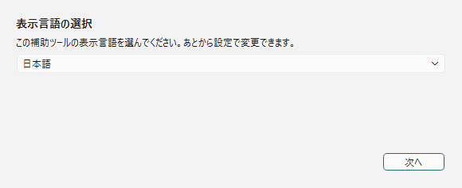
| 操作 | 説明 |
|---|---|
| 言語プルダウン | Assist の UI 言語を選びます。この画面で選べるのは日本語・English・Español です。ほかの言語は、起動後に設定ダイアログの「全般」タブの「表示言語」で選びます。 |
| 次へ | Arena フォルダ指定へ進みます。 |
Arena を起動した状態で進めると、Assist が実行中の Arena からインストール先を自動検出します。自動検出できない場合は、参照... で Arena のデータフォルダを指定します。
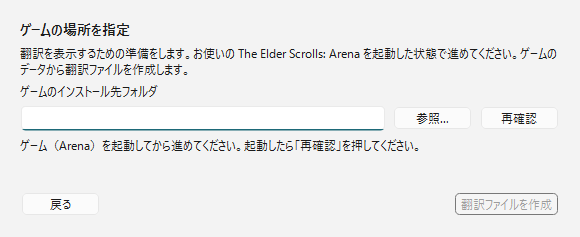
| 項目 | 説明 |
|---|---|
| ゲームのインストール先フォルダ | Arena の ARENA フォルダを指定します。 |
| 参照... | フォルダ選択ダイアログから Arena フォルダを指定します。 |
| 再確認 | 起動中の Arena を再検出します。 |
| 翻訳ファイルを作成 | 有効な Arena フォルダが見つかったら、翻訳ファイル生成へ進みます。 |
Arena フォルダのデータから Assist 用の翻訳ファイルを生成します。完了すると本体画面へ進みます。
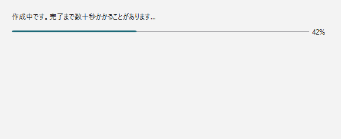
作成中は、進み具合のバーと、いま行っている段階が表示されます。起動中の Arena からもデータを読み取るため、終わるまで Arena を閉じないでください。
Assist の上部には接続バー、中央にはタブ領域、下部にはステータスバーがあります。
起動直後は未接続です。Arena / DOSBox を起動した状態で、右上の 接続 ボタンを押します。
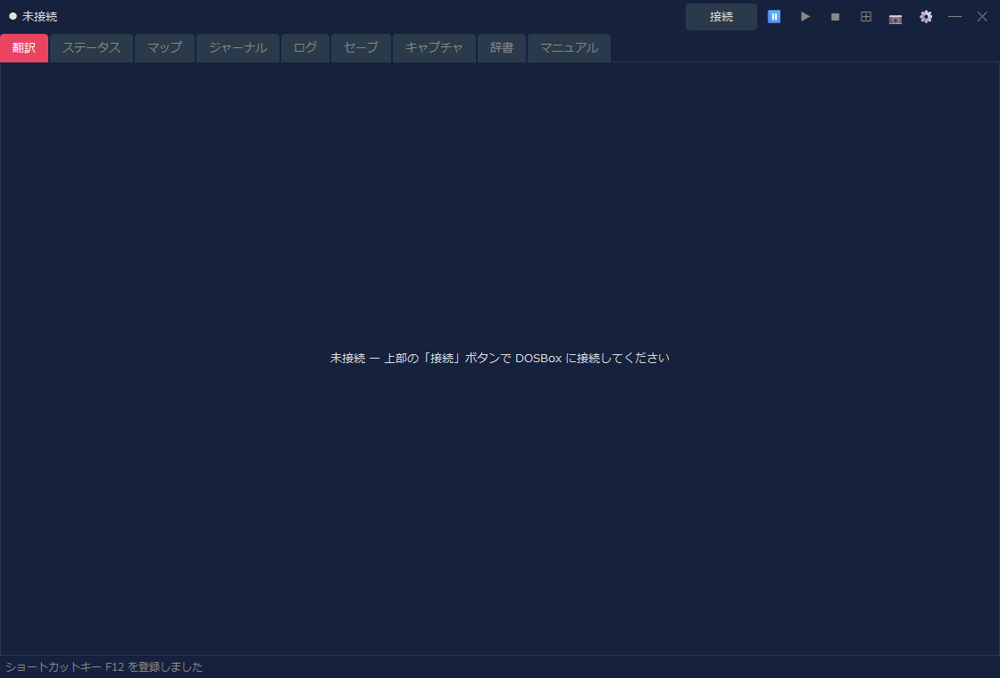
| 領域 | 説明 |
|---|---|
| 接続状態 | 未接続、接続中の画面名、IMG 名などを表示します。 |
| 接続 / 切断 | DOSBox 内の Arena へ接続、または接続解除します。 |
⏸ / ▶ / ■ | 読み上げを一時停止 / 再開 / 停止します。読み上げは設定ダイアログの「読み上げ」タブで有効にすると使えます（初期設定は OFF）。 |
⊞ | レイアウトモードを切り替えます。右クリックで配置メニューを開きます。 |
📷 | スクリーンショットを保存します。レイアウトモード中はレイアウト全体を1枚で保存します。ゲーム画面（DOSBox）にフォーカスがある間も、ショートカットキー（初期設定は F12）で同じように保存できます。 |
⚙ | 設定ダイアログを開きます。 |
起動直後にステータスバーへ出る「ショートカットキー F12 を登録しました」は、キャプチャのショートカットキーが使える状態になったことの知らせです。キーは設定ダイアログの「全般」タブで変更できます。
接続すると、接続バーの左端に認識中の画面名が表示されます。下の例は Arena のタイトル画面に接続している状態です。
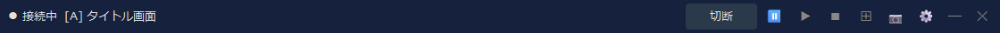
画面名の右には、その画面が使っている IMG 名も表示されます（タイトル画面のように IMG を使わない画面では出ません）。設定ダイアログの「表示」タブで、画面名と IMG 名のどちらを出すかを切り替えられます。
Assist は、基本的にレイアウトモードで使うことを想定しています。通常ウィンドウのままでも各タブは使えますが、レイアウトモードにするとゲーム画面、翻訳、マップ、ログなどを同じ画面に固定して確認できます。
既定のレイアウトでは、左側に DOSBox のゲーム画面、右側に Assist のメインタブ、下部に補助パネルが配置されます。ゲーム中は、右側でマップやジャーナルを確認しながら、下部や翻訳タブで現在画面の翻訳を確認できます。
| 操作 | 説明 |
|---|---|
⊞ を左クリック | レイアウトモードの開始 / 終了を切り替えます。 |
⊞ を右クリック | 配置形式、配置コーナー、追従モード、再配置、最前面表示などを選べます。 |
📷 | レイアウトモード中は、DOSBox と Assist を含むレイアウト全体を1枚の画像として保存します。 |
切断 | Arena との接続を解除します。レイアウトモードを終了してから切断すると画面整理がしやすくなります。 |
各タブのスクリーンショットは画面構成を確認するためのものです。接続中は、Arena の現在画面やゲーム内状態に応じて表示内容が更新されます。
現在の画面に対応する翻訳を表示する中心的なタブです。タイトル画面、キャラクター作成、会話、施設、アイテム、呪文など、状況に応じて表示が切り替わります。

| 表示内容 | 説明 |
|---|---|
| 翻訳結果 | 現在画面やイベントの日本語訳を表示します。 |
| 原文 | 設定に応じて、対応する英語原文も表示します。 |
| 専用表示 | クラス一覧、種族一覧、装備、施設一覧、購入一覧などは専用の見やすい表示へ切り替わります。 |
設定の「戦闘情報」タブで、戦闘中の情報を翻訳タブにも表示できます。「通常表示と併用」または「戦闘情報を全面表示」を選び、文字情報か敵のメーター表示かを指定します。既定は表示なしで、従来の翻訳タブ表示を維持します。
キャラクターの能力値や状態を確認するタブです。キャラクター作成後、またはゲーム中に接続していると、ステータス情報が表示されます。
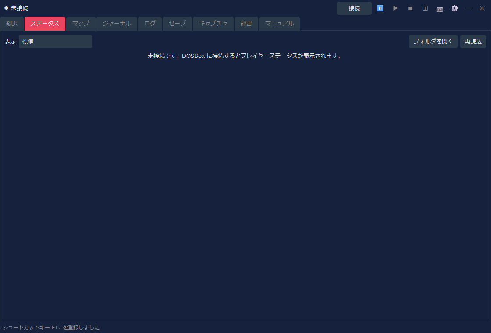
| 表示内容 | 説明 |
|---|---|
| 表示 | 「標準」（これまでの表示）か、任意のデザイン（キャラクターシート）を選びます。翻訳タブのステータス画面・能力値の割り振りでも、ここで選んだ表示が使われます。 |
| 能力値 | Strength、Intelligence などの主要能力値を確認できます。 |
| 状態値 | HP、疲労、呪文ポイントなどを確認できます。 |
| 変更操作 | チート設定を明示的に有効にした場合のみ、能力値変更などの操作が使えます（「標準」の表示）。 |
ステータスを任意のデザインで表示する機能です。「表示」で「標準」以外を選ぶと、ステータスを選んだデザインで表示します。 デザインは HTML のファイル（テンプレート）で、同梱のデザインは 8 種です。自分で作ることもできます。 顔と全身像（装備を含む）、キャラクターの状態（病気・毒・麻痺など）、部位ごとのアーマーレーティング（装備から計算した値・ 小さいほど守りが固い）を表示するデザインもあります。顔と全身像は、お使いの Arena のファイルから作ります。
| 操作 | 説明 |
|---|---|
| フォルダを開く | 自作のキャラクターシート（HTML ファイル）を置くフォルダを開きます（RTESArenaAssist.exe と同じ場所の character_sheets）。初めて開く時は、同梱のデザインの写しを置きます。置いたファイルは「表示」の一覧に「（フォルダ）」付きで出ます。 |
| 再読込 | フォルダのキャラクターシートを読み直します。ファイルを書き換えた後に押します。 |
同梱のデザインの一覧、キャラクターシートの仕組み、差し込める値と書き方は このマニュアルの「ステータスのデザイン（キャラクターシート）」の頁を参照してください。
ダンジョン、街、フィールド、室内などの自動マップを表示します。ゲーム内の現在地に合わせて表示が更新されます。
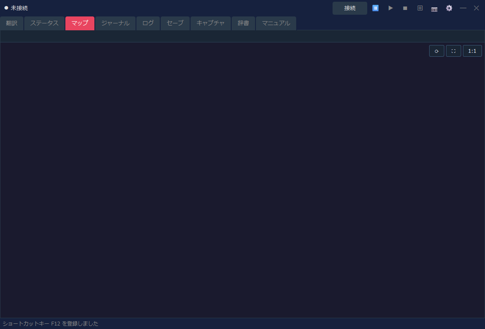
| 表示内容 | 説明 |
|---|---|
| 現在地表示 | 接続中のゲーム状態から、現在のマップや位置を表示します。 |
| 自動マップ | 判明済みエリア、壁、入口、フィールド地形などを描画します。 |
| 表示設定 | グリッド、チャンク座標、フィールド拡張表示などは設定ダイアログから調整できます。 |
ゲーム内の Logbook / Journal に記録された内容を、日本語で確認するタブです。
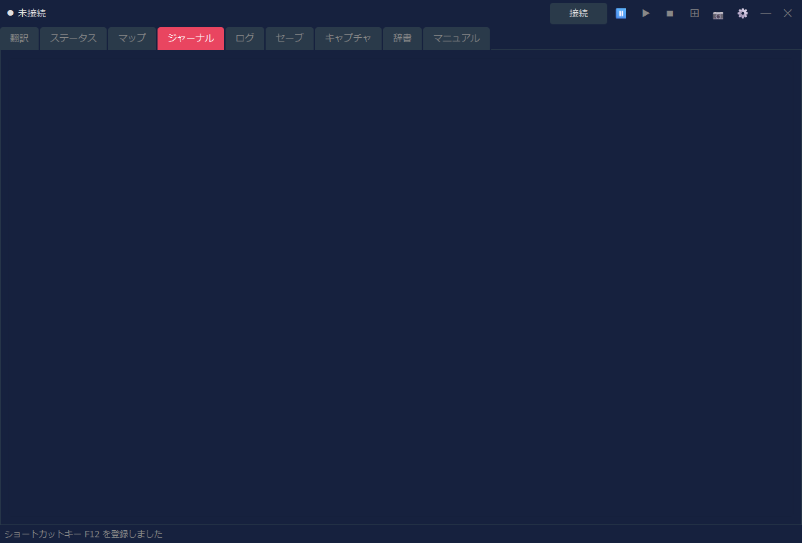
| 表示内容 | 説明 |
|---|---|
| 日付・見出し | ジャーナル項目の日付や概要を表示します。 |
| 本文 | Logbook の本文を日本語で表示します。 |
| 更新 | ゲーム内でジャーナルが更新されると、Assist 側の表示も更新されます。 |
Assist が表示した翻訳を履歴として確認するタブです。見逃した文章を後から読み返す用途に向いています。
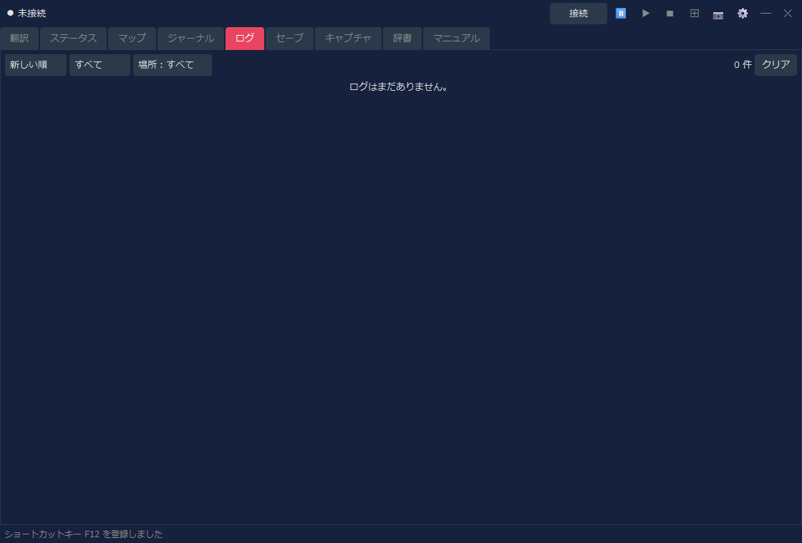
| 操作 | 説明 |
|---|---|
| 並び順 | 新しい順 / 古い順を切り替えます。 |
| フィルタ | 種別や場所でログを絞り込みます。 |
| クリア | 表示中のログを消去します。 |
戦闘ログの保存を有効にして記録ができた場合は、ログタブ内で「通常ログ」と「戦闘ログ」を切り替えられます。戦闘ログがない場合は、従来どおり通常ログだけを表示します。
Arena のセーブスロットとバックアップを管理するタブです。復元前の自動バックアップなど、セーブデータ操作を補助します。
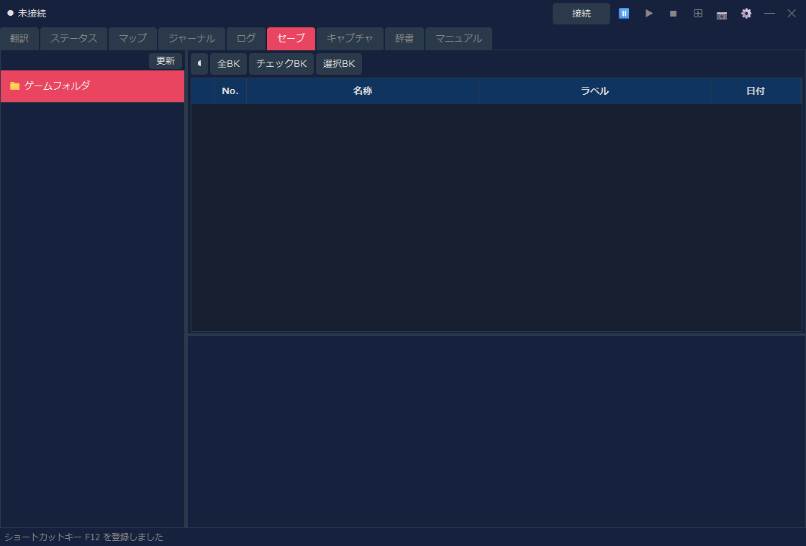
| 操作 | 説明 |
|---|---|
| スロット一覧 | Arena のセーブスロットを一覧表示します。 |
| バックアップ | 選択したセーブをバックアップします。 |
| 復元 | バックアップからセーブデータを戻します。 |
| 削除 | 不要なバックアップやセーブを削除します。 |
📷 ボタンで保存したスクリーンショットを確認するタブです。レイアウトモード中に撮った画像もここから開けます。
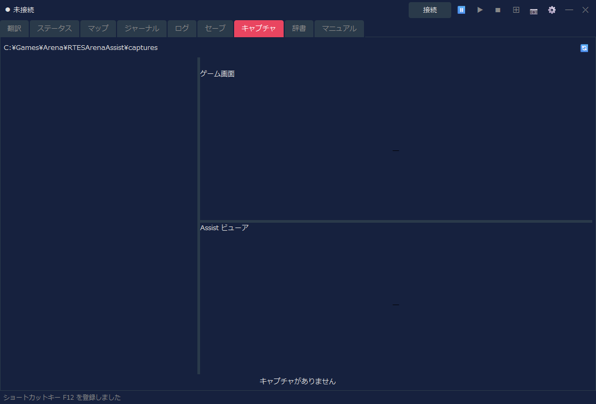
| 操作 | 説明 |
|---|---|
| 一覧 | 保存済みキャプチャを表示します。 |
| プレビュー | 選択した画像を確認します。 |
| ロック | 残したい画像を削除対象から守ります。 |
| 削除 | 選択画像または不要な画像を削除します。 |
Assist が持つ翻訳辞書とダンジョンテキストを検索するタブです。ゲーム内で出てきた単語や文章の確認に使えます。
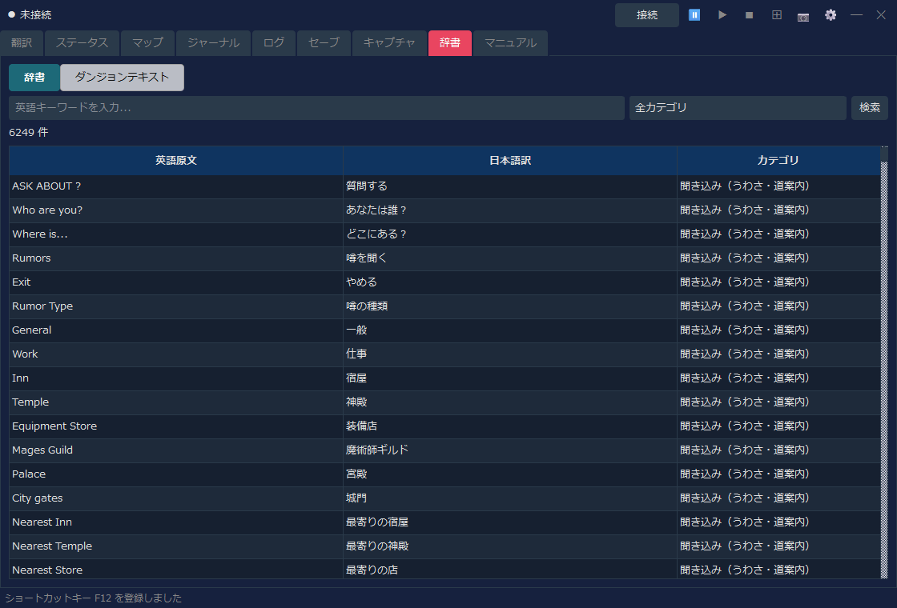
| 表示モード | 説明 |
|---|---|
| 辞書 | 英語キーワード、日本語訳、カテゴリで検索します。 |
| ダンジョンテキスト | INF 由来のダンジョン文章を検索・確認します。 |
Arena の基本操作やシステムの説明と、Assist の機能の説明を、表示言語で確認できるタブです。ゲーム中に操作や用語を確認したいときに使います。
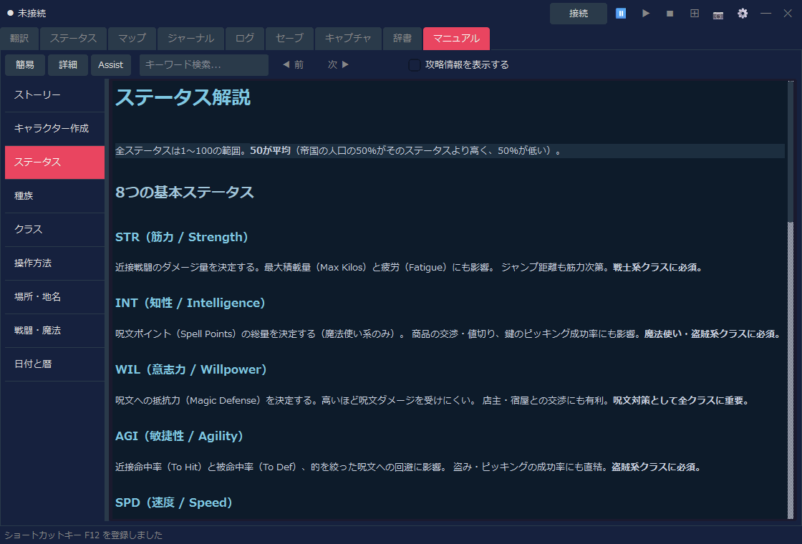
| 操作 | 説明 |
|---|---|
| 簡易 / 詳細 / Assist | 表示する内容を切り替えます（下の表）。 |
| キーワード検索 | マニュアル内を検索します。 |
| 左側リスト | ストーリー、キャラクター作成、操作方法、戦闘などの章を切り替えます。 |
| 切り替え | 内容 | 言語 |
|---|---|---|
| 簡易 | ゲームの説明（9章） | 12言語 |
| 詳細 | 公式マニュアルの訳（翻訳パックを取り込んで表示） | 現在は日本語のみ |
| Assist | Assist の機能の説明（基本操作・設定ダイアログ・ステータスのデザイン（キャラクターシート）） | 12言語 |
詳細版（公式マニュアルの訳）
「詳細」では、公式マニュアル（Player's Guide と追補）の訳を読めます。訳は表示言語ごとの翻訳パック（RTESArenaAssist-manual-<言語>.zip）として、本体とは別に マニュアルのダウンロードページ で配っています（現在は日本語のみ）。初めて使うときは、次の手順で取り込みます。
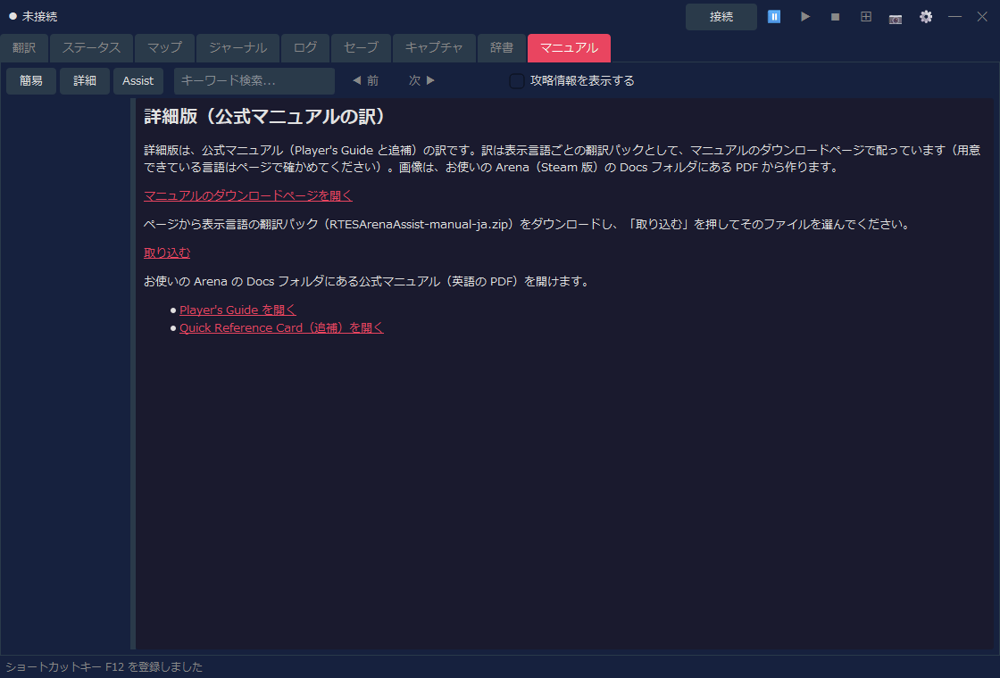
マニュアルの画像は、お使いの Arena（Steam 版）の Docs フォルダにある Player Guide.pdf から作ります。PDF が見つからない場合や版が異なる場合は、文章だけを表示します。設定の「ゲームフォルダ」を確かめてから「画像を作り直す」を押すと、画像も表示されます。取り込んだ後は、ダウンロードしたファイルを削除しても構いません。Assist 自身はインターネットに接続しません（ダウンロードはお使いのブラウザで行います）。
「詳細」には、Docs フォルダにある公式マニュアル（英語の PDF）を開くリンクも表示します。表示言語が英語の場合は、翻訳パックの代わりにこのリンクだけを表示します。
接続 を押して Arena / DOSBox に接続します。⊞ を押してレイアウトモードに入ります。📷 か、ショートカットキー（初期設定は F12）でキャプチャします。⊞ でレイアウトモードを終了してから、必要に応じて 切断 します。レイアウトモードの表示サイズ、配置形式、翻訳パネル、キャプチャ保存先などは、設定ダイアログから調整できます。翻訳の読み上げを使う場合も、設定ダイアログの「読み上げ」タブで有効にします。